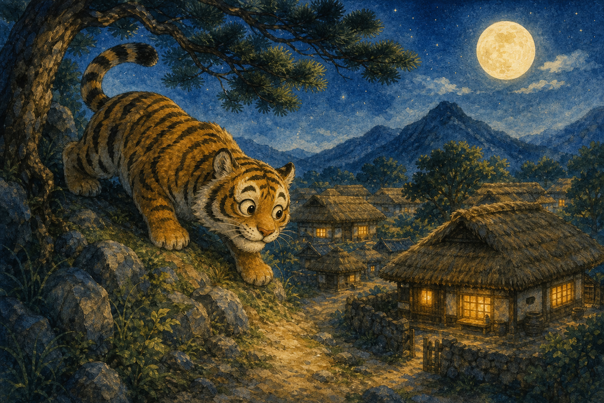
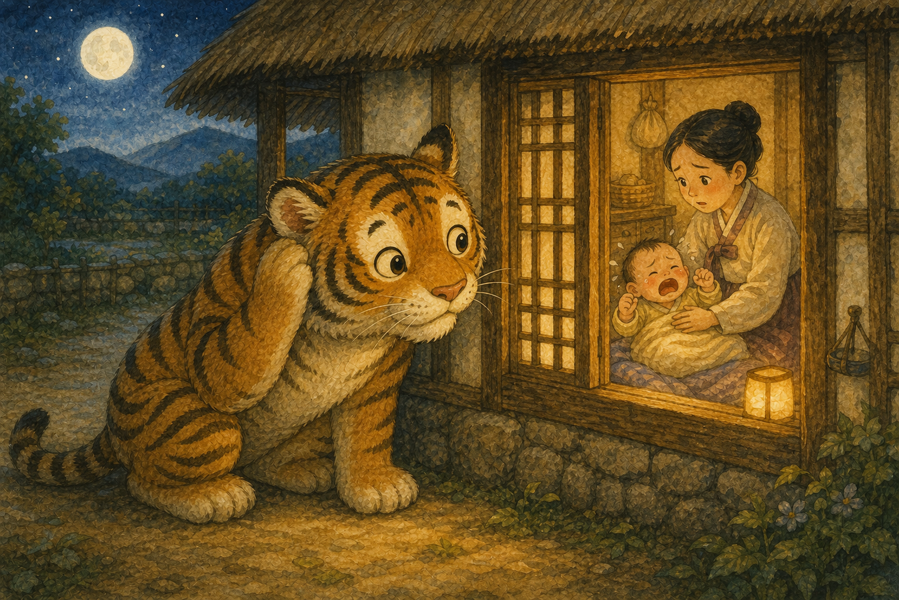
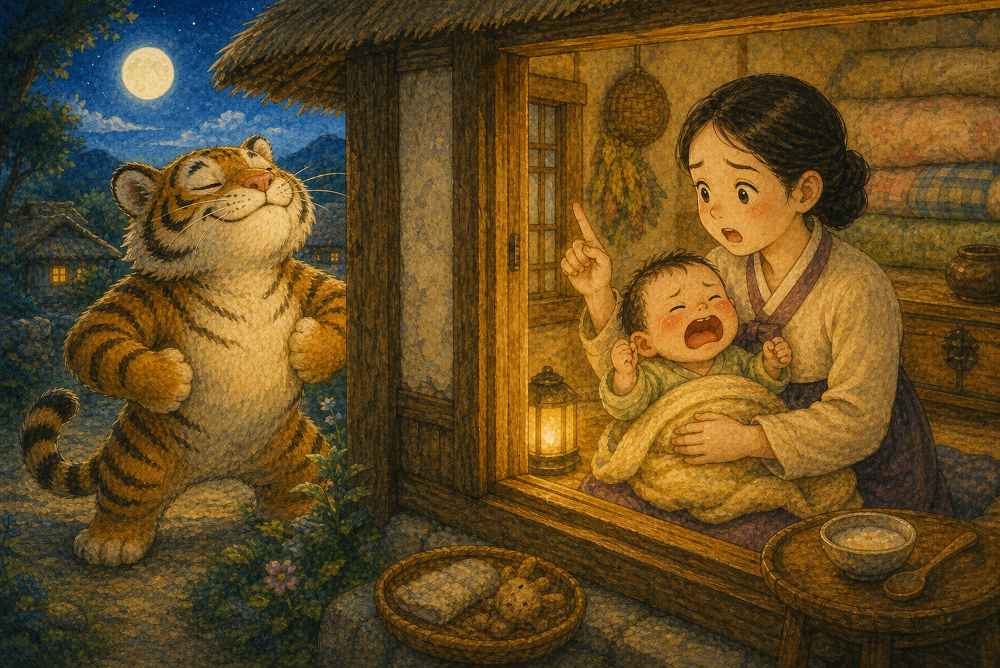
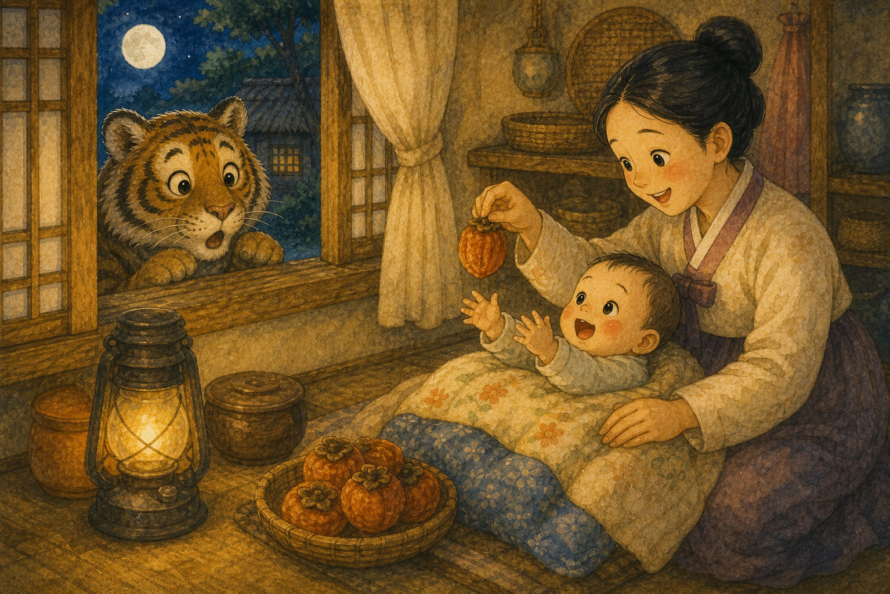
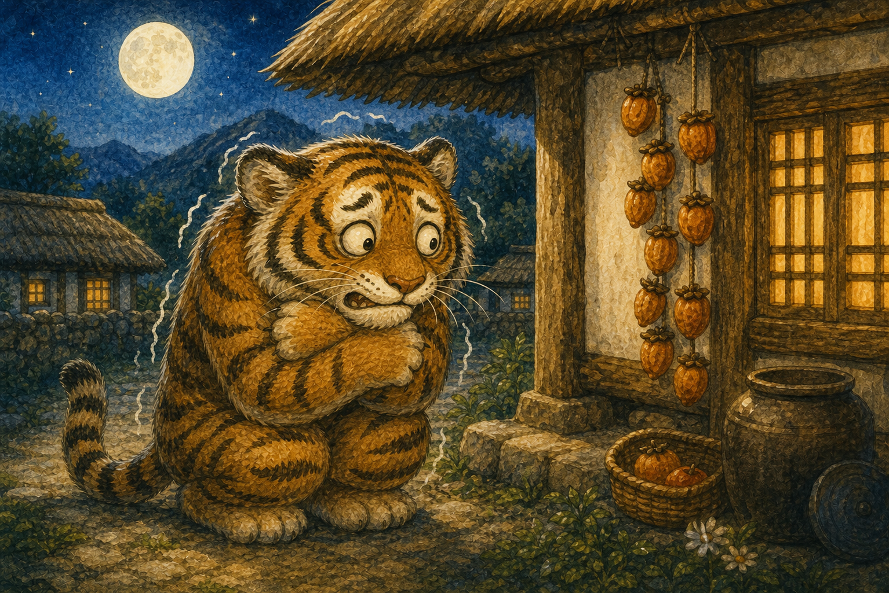
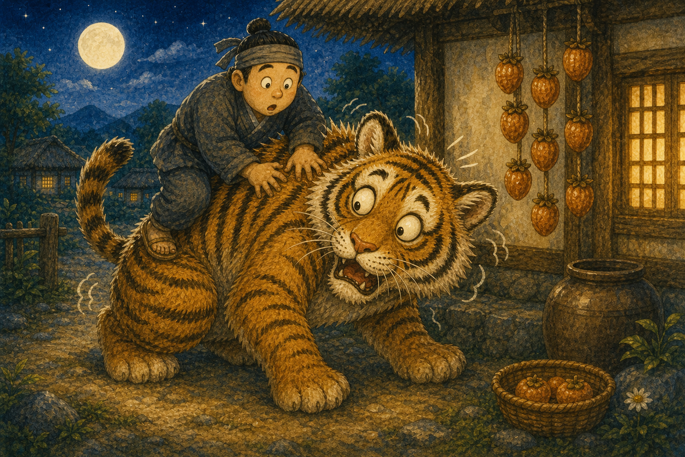
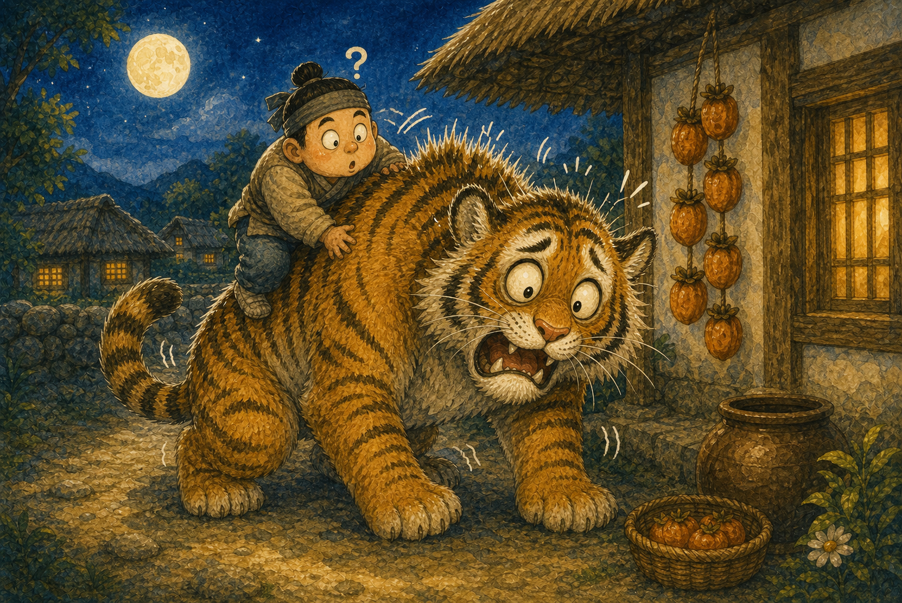
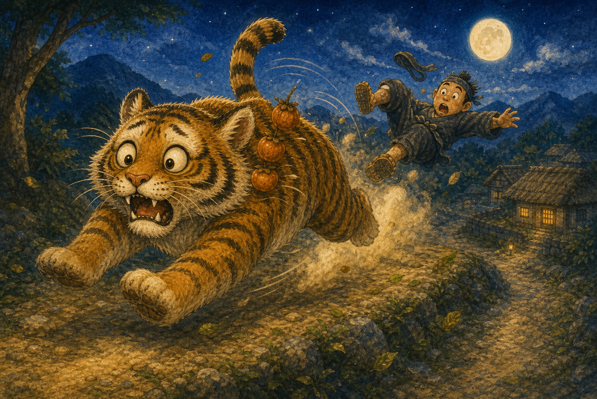
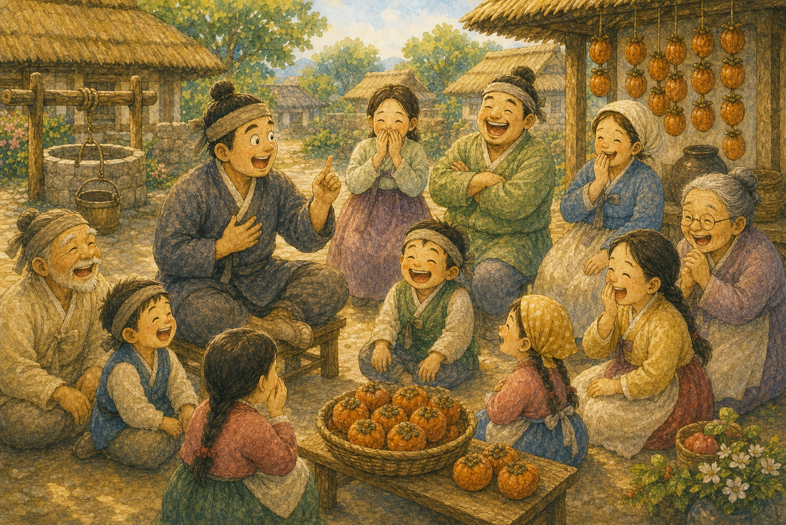
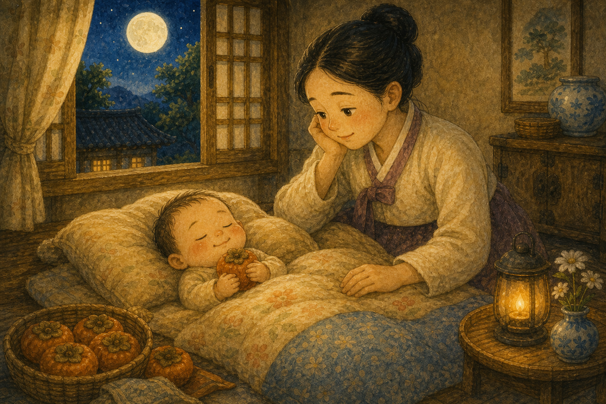

깊은 산속 호랑이
옛날 옛적 깊은 산속에 커다란 호랑이가 살았어요. 배가 고픈 호랑이는 마을로 슬금슬금 내려왔지요.
"오늘은 무얼 먹어 볼까?"

옛날 옛적 깊은 산속에 커다란 호랑이가 살았어요. 배가 고픈 호랑이는 마을로 슬금슬금 내려왔지요.
"오늘은 무얼 먹어 볼까?"

한 초가집에서 아기 울음소리가 들렸어요. 호랑이는 창가에 귀를 쫑긋 기울였지요.
"으앙, 으앙!"

엄마가 "호랑이가 왔다!"라고 달래도 아기는 계속 울었어요. 호랑이는 자기 이름을 듣고 어깨를 으쓱했지요.
"흠, 다들 나를 무서워하는군."

엄마가 "곶감 줄게" 하자 아기가 울음을 뚝 그쳤어요. 방 안이 갑자기 조용해졌지요.
"어? 울음을 단번에 멈췄잖아?"

호랑이는 곶감이 자기보다 무서운 존재라고 오해했어요. 자기 이름엔 울던 아기가 곶감엔 뚝 그쳤으니까요.
"곶감이 나보다 더 센가 봐!"

그때 소를 훔치러 온 도둑이 어둠 속 호랑이를 소로 착각했어요. 도둑은 슬그머니 호랑이 등에 올라탔지요.
"옳지, 이 소를 끌고 가야지."

호랑이는 등에 올라탄 것이 무서운 곶감이라고 생각했어요. 깜짝 놀라 부르르 떨었지요.
"으악, 곶감이 내 등에 탔어!"

호랑이는 곶감을 떼어 내려고 산으로 마구 달렸어요. 깜짝 놀란 도둑도 슬며시 굴러떨어졌지요.
"걸음아 날 살려라!"

다음 날 마을은 호랑이 이야기로 떠들썩했어요. 곶감을 무서워한 호랑이라며 모두 깔깔 웃었지요.
"무서운 호랑이가 곶감에 도망쳤대!"

아기는 달콤한 곶감을 들고 새근새근 잠이 들었어요. 잘 모르면 헛되이 무서워하기도 한다는 옛이야기랍니다.
"곶감은 사실 달콤한 간식이었지요."